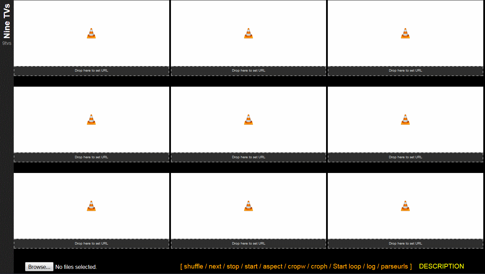

NineTVslink Description Pagelink ninetvs.htmlhttps://wg.nfshost.com/9tvs/ninetvs.html ninetvs.csshttps://wg.nfshost.com/9tvs/ninetvs.css ninetvs.js https://wg.nfshost.com/9tvs/ninetvs.js
The page will take video playlists and load the items as instructed. You can use it to watch videos from different sources simultaneously in a fairly simple interface. The videos should start muted, so don't worry about being blasted with a wall of sound you can't turn off. Also, since everything is being run locally in your browser, I don't get any information about your use other than that you loaded the page unless you use the URL to auto load videos.
The video player is VLC's NPAPI web plugin, which means that it can handle most video formats, and also audio formats, if you want. It also works for YouTube videos!
The playlist format is a basic m3u playlist. It is loaded into your browser (not uploaded to me or anywhere) from your computer and can be used to load from sources on the internet or locally. You can also drag-and-drop individual links. (In the future I intend to include an option to load from a URL, such as a pastebin link.)
For example, you can use this to:
Used this for something else? Let me know about it!
Running the page can use a lot of resources. I'm not an expert on that but it can be difficult to run on weaker systems. Also bandwidth requirements for several web videos at once can be very high and things naturally run smoother when you aren't bottlenecking your feeds.
Since this will be running using the VLC NPAPI plugin, you will likely need to get a compatible browser, because Firefox and Chrome stopped supporting NPAPI on their standard release since this project was begun. For this reason I recommend to use the latest version of Seamonkey or Firefox ESR.
The VLC web player plugin is installed when you install VLC, so head over to their website to download and install it.
Once you have the plugin running, loading the page should look like this:
You can use your browser's zoom function (CTRL+mousescroll) to resize the page elements to better fit your screen resolution if necessary. I also recommend to try fullscreening your browser (F11), which can increase the space available for videos.
To load a playlist, click Browse... at the bottom left, and select your m3u, txt or other compatible file. (Note: loading the video files themselves will not work here)
You can try using an example m3u file downloaded from this link. (Sourced from here.)
At this point, you are ready to hover over Next, and hit "Next - All" to load the first nine videos! Alternatively, you can hit "Next - 1", "Next - 2", etc to load only a single item in the indicated position. You can stop videos the same way: hover over "Stop", select "Stop - 6". Many of the other buttons also have you hover over the option, select the position you wish to affect or the batch bar for all of them.
You can toggle the mute for each video by hovering over each image and using the mute button. Note that the video will automatically mute every time you load a new item.
By hovering over the video, you can also use the pause button, activate fullscreen with the fullscreen button or double clicking the video, or change the volume.
Shuffle the playlist before you begin or at any time. Note that this will only shuffle the remaining unloaded videos on the list.
Start will restart a video that is in the indicated position but is currently not playing, maybe it finished, or you stopped it manually, or the stream broke.
Aspect, Cropw and Croph will let you fix the aspect and cropping of the videos.
Aspect will toggle between 16:9, 16:10 and 4:3.
Crop will take about 10 pixels off the left and right sides or top and bottom sides of the selected video. The bottom bar for crop will reset all crop settings if you overdo it or change videos. (The bottom bar for aspect does nothing.)
Start Loop is intended for streaming content, so that when the stream breaks it will automatically reconnect. For now, this affects all slots at once and the page must be reloaded to turn it off. Also it may be broken currently.
Log will print two things at the bottom of the page:
1. A list of the links currently loaded
2. A URL containing the links currently loaded that will automatically load the videos when the page loads. You can use this to quickly load a set of videos or to send a page with particular videos to a friend.
Parseurls will take a playlist and attempt to cut out any line that does not look like a valid URL. It's not perfect but it's pretty good. I will make it a bit better in the future. You can copy an entire page of text and parse out everything that is not a link without having to do it manually, for example.
In addition to using the Browse button to load a playlist or the URL autoload a set of videos, you can also drag a link from anywhere onto the line below each video slot and it will load the video.